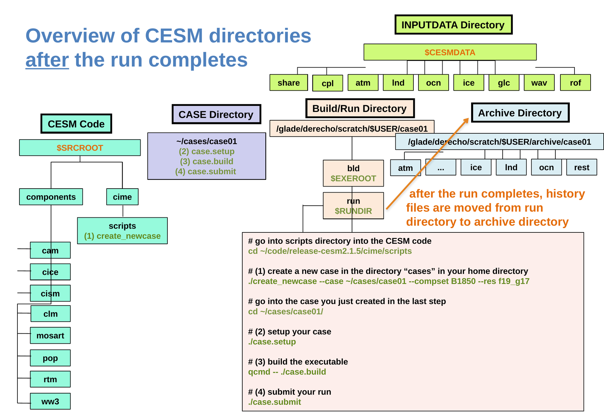

The 4 commands to run CESM#
Running CESM involves four main steps:
Create a case.
Set up the case.
Build the CESM executable.
Submit the simulation.
Each commands performs a different task. Understanding these steps will make it much easier to modify your simulations and diagnose problems later.
Before creating a case#
You must make three choices:
Choice |
What it means |
|---|---|
Case name |
The name of your experiment |
Component set ( |
Which model components and experimental conditions CESM will use |
Grid ( |
The horizontal resolution used by the model components |
The general form of the workflow is shown below.
Important:
CASE_NAME,COMPSET, andGRIDare placeholders. Do not enter them literally. Replace them with the values selected for your experiment.
Step 1: Create the case#
Begin in the cime/scripts directory of the CESM code:
cd ~/code/release-cesm2.1.5/cime/scripts
The general form of the command is:
./create_newcase \
--case ~/cases/CASE_NAME \
--compset COMPSET \
--res GRID
This command creates a new case directory containing the configuration for your experiment.
At this stage, CESM knows:
The name of the experiment
Which model components to use
Which grid to use
Where the case, build/run, and archive directories will be located
The model has not yet been built or run.
Step 2: Set up the case#
Move into the case directory:
cd ~/cases/CASE_NAME
Then run:
./case.setup
case.setup prepares the scripts and configuration files that CESM needs to build and run the experiment.
The model has still not been compiled or run.
Step 3: Build CESM#
Build the model executable with:
qcmd -- ./case.build
Building means compiling the CESM source code into an executable program that Derecho can run.
The qcmd command asks Derecho to perform the build on a compute node. Building CESM is computationally intensive and should not be done directly on a login node.
A successful build produces the CESM executable in the build directory.
You normally build a case only once. You may need to rebuild it later if you change the source code or certain configuration settings.
Step 4: Submit the simulation#
Submit the simulation with:
./case.submit
This command sends the simulation to Derecho’s PBS batch scheduler.
The model does not necessarily begin running immediately. It may wait in the queue until the requested computing resources become available.
When the job starts, CESM runs in the run directory.
Follow the job#
Use qstat to see whether your job is queued or running:
qstat -u $USER
The most common status codes are:
Status |
Meaning |
|---|---|
|
The job is queued and waiting to run. |
|
The job is running. |
|
The job is being held while it waits for another job to finish. |
Not listed |
The job has finished or stopped because of an error. |
A job disappearing from qstat does not necessarily mean that it succeeded.
Check whether the simulation succeeded#
CESM records the status of each step in a file named CaseStatus, located in the case directory.
Use:
tail -20 ~/cases/CASE_NAME/CaseStatus
A successful simulation includes:
case.run success
After CESM organizes the output files, you should also see:
st_archive success
If you see case.run error, the simulation crashed. The log files will provide more information about what went wrong.
How the five directories are used#
Directory |
Role in the workflow |
|---|---|
CESM code |
Provides the source code and the |
Input data |
Provides the grids, initial conditions, and forcing data required by the selected case. |
Case |
Is created by |
Build/run |
Is used when CESM is compiled and when the simulation runs. |
Archive |
Receives organized output, restart, and log files after the run. |

In the next exercise, you will apply this workflow to create and run a specific CESM case.
The 4 commands to run CESM#
In this exercise, you will create, set up, build, and submit your first CESM experiment. A CESM experiment is called a case.
Run all the commands below from a terminal on Derecho.
Before you begin#
This example uses:
Case name:
case01Component set:
B1850, a coupled preindustrial configurationResolution:
f19_g17, with an atmosphere and land grid of approximately 2° and an ocean and sea-ice grid of approximately 1°
The case name identifies your experiment. If you choose a different name, use it consistently throughout the tutorial.
Important: Each case must have a unique name. If
~/cases/case01already exists,create_newcasewill stop rather than overwrite it.
The four commands#
# Go to the scripts directory in the CESM code
cd ~/code/release-cesm2.1.5/cime/scripts
# 1. Create a new case
./create_newcase \
--case ~/cases/case01 \
--compset B1850 \
--res f19_g17
# Move into the new case directory
cd ~/cases/case01
# 2. Set up the case
./case.setup
# 3. Build the CESM executable
qcmd -- ./case.build
# 4. Submit the simulation
./case.submit
The backslashes (\) in the create_newcase command allow one long command to be displayed on several lines. You can copy and run all four lines together.
What happens at each step?#
Step |
Command |
What it does |
|---|---|---|
1. Create |
|
Creates the case directory and records your chosen case name, component set, resolution, and Derecho settings. |
2. Set up |
|
Creates the scripts and configuration files needed to build and run the case. |
3. Build |
|
Compiles the CESM source code and creates the model executable. The |
4. Submit |
|
Submits the simulation to Derecho’s PBS batch queue. CESM will run when the requested computing resources become available. |
case.submit does not run CESM directly in your terminal. It sends the job to Derecho’s scheduler, which decides when the job can begin.
Check the job queue#
After submitting the case, check its status with:
qstat -u $USER
You may see output similar to this:
Req'd Req'd Elap
Job ID Username Queue Jobname SessID NDS TSK Memory Time S Time
--------------- -------- -------- ---------- ------ --- --- ------ ----- - -----
6315297.desche* hannay cpu run.case01 -- 6 768 1410g 12:00 Q --
6315298.desche* hannay cpu st_archiv* -- 1 1 235gb 00:20 H --
The main jobs are:
run.case01: runs the CESM simulation.st_archive: organizes the output after the simulation finishes.
The S column shows the job status:
Status |
Meaning |
|---|---|
|
The job is queued and waiting for resources. |
|
The job is running. |
|
The job is being held. For example, the archive job waits for the simulation to finish. |
Not listed |
The job has finished or stopped because of an error. |
A job disappearing from qstat does not prove that it succeeded. You must check the case status.
Check whether the run succeeded#
1. Check CaseStatus#
The CaseStatus file records the major steps completed by CESM:
tail -20 ~/cases/case01/CaseStatus
A successful run will include lines similar to:
2026-09-02 14:32:07: case.submit starting
---------------------------------------------------
2026-09-02 14:32:09: case.run starting
---------------------------------------------------
2026-09-02 14:44:51: case.run success
---------------------------------------------------
2026-09-02 14:45:02: st_archive starting
---------------------------------------------------
2026-09-02 14:45:18: st_archive success
Look for:
case.run success: the simulation finished successfully.st_archive success: CESM successfully moved and organized the output files.
If you see case.run error, the simulation crashed.
2. Check the CESM log#
You can also search the main CESM log for a successful-termination message:
zgrep "SUCCESSFUL TERMINATION" \
~/cases/case01/logs/cesm.log.*.gz
A successful run should contain a line similar to:
(seq_mct_drv): =============== SUCCESSFUL TERMINATION OF CPL7-cesm ===============
If you do not find this message, examine the log files for an error or traceback. The Troubleshooting chapter explains what to check when a run crashes.
3. Check the archive#
After st_archive success appears, list the archive directory:
ls /glade/derecho/scratch/$USER/archive/case01
You should see directories containing model output, restart files, and log files.
Where are the five directories now?#
After the run and archive steps finish:
The CESM code directory still contains the source code.
CESM reads the required files from the shared input data directory.
The case directory contains the experiment configuration and commands.
The build/run directory contains the executable and the files used while CESM runs.
The archive directory contains the organized output, restart, and log files.
# go into the scripts directory of the CESM code
cd ~/code/release-cesm2.1.5/cime/scripts
# (1) create a new case in the "cases" directory in your home directory
./create_newcase --case ~/cases/case01 --compset B1850 --res f19_g17
# go into the case you just created
cd ~/cases/case01/
# (2) setup your case
./case.setup
# (3) build the executable
qcmd -- ./case.build
# (4) submit your run
./case.submit
What happens at each step#
Step |
Command |
What it does |
|---|---|---|
1 |
|
Creates the case directory and the build/run directory. |
2 |
|
Sets up the case scripts. |
3 |
|
Compiles the code. |
4 |
|
Runs the model (submits the job to the batch queue). |
After the run completes, history files are moved from the run directory to the archive directory.
How do I know it is running?#
To check whether your job is running, use:
qstat -u $USER
Req'd Req'd Elap
Job ID USERname Queue Jobname SessID NDS TSK Memory Time S Time
--------------- -------- -------- ---------- ------ --- --- ------ ----- - -----
6315297.desche* hannay cpu run.case01 -- 6 768 1410g 12:00 Q --
6315298.desche* hannay cpu st_archiv* -- 1 1 235gb 00:20 H --
Status
Q: the job is queued, waiting to run.Status
R: the job is running.No longer listed: the job is completed — or it crashed. Check the log files (see the Output chapter) to find out which!
What does success actually look like?#
“No longer listed in qstat” isn’t proof your run succeeded — it also disappears from the
queue if it crashed. Two quick, definitive checks:
1. CASE/CaseStatus — a running log of every step, with a pass/fail line for each:
tail -20 ~/cases/case01/CaseStatus
2026-09-02 14:32:07: case.submit starting
---------------------------------------------------
2026-09-02 14:32:09: case.run starting
---------------------------------------------------
2026-09-02 14:44:51: case.run success
---------------------------------------------------
2026-09-02 14:45:02: st_archive starting
---------------------------------------------------
2026-09-02 14:45:18: st_archive success
case.run success (not case.run error) is your first confirmation the model actually ran to completion.
2. The tail of the main log file in $RUNDIR (or CASE/logs once archived) — look for the line:
zcat ~/cases/case01/logs/cesm.log.*.gz | tail -5
(seq_mct_drv): =============== SUCCESSFUL TERMINATION OF CPL7-cesm ===============
(seq_mct_drv): =============== at YMD,TOD = 00010106 0 ===============
SUCCESSFUL TERMINATION is the model itself confirming it finished cleanly. If instead the
log ends mid-timestep, with a Fortran traceback, or an ERROR:/abort message, the run
crashed — see the Troubleshooting chapter.
As a third sanity check, once st_archive success appears, you should see new files under
your archive directory (e.g., .../archive/case01/rest/).